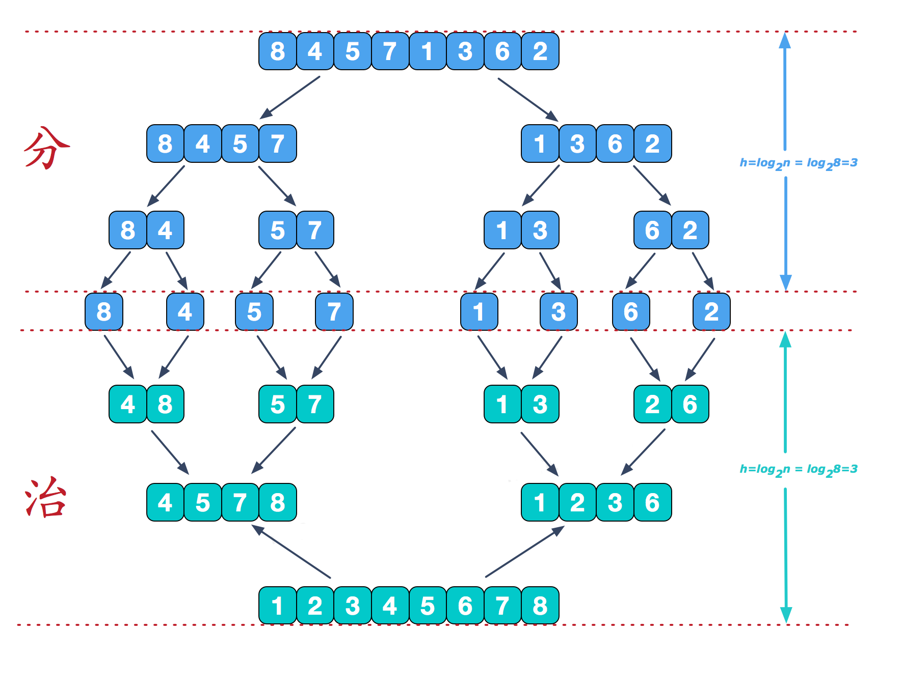

前言
系统地过一遍《算法导论》，理清之前做题时的混乱思路。
伪代码均以类似 Python 的形式书写。
算法基础
插入排序（insertion sort）
伪代码：
1 | insert_sort(A) |
举个栗子：
假设手上有一副牌 A = {5, 2, 4, 6, 1, 3}，插入排序的步骤就是：
从第二张牌 2 开始，前面的 5 和 2 比较，因为 5 > 2，所以 2 插到 5 前面；此时牌序为 {2, 5, 4, 6, 1, 3}，因为 2 已经在最前面，所以下一轮。
{2, 5, 4, 6, 1, 3}
从第三张牌 4 开始，前面的 5 和 4 比较，因为 5 > 4，所以 4 插到 5 前面；此时牌序为 {2, 4, 5, 6, 1, 3}，因为前面的牌都有序了，下一轮。
{2, 4, 5, 6, 1, 3}
从第四张牌 6 开始，前面的牌都有序了，下一轮。
{2, 4, 5, 6, 1, 3}
从第五张牌 1 开始，前面的牌都有序了，并且都比 1 大，所以 1 插到最前面；此时牌序为 {1, 2, 4, 5, 6, 3}，下一轮。
{1, 2, 4, 5, 6, 3}
从最后一张即第六张牌 3 开始，前面的牌都有序了，并且 3 比 4 小，所以 3 插到 4 前面，结束。
事实上，元素 A[0 … j - 1] 就是原来在位置 0 到 j - 1 的元素，但现在已按序排好，我们把 A[0 … j - 1] 的这些性质形式地表示为循环不变式。
关于循环不变式，我们必须证明三条性质：
初始化：循环的第一次迭代之前，它为真。
保持：如果循环的某次迭代之前它为真，那么下次迭代之前它仍为真。
终止：在循环终止前，不变式为我们提供一个有用的性质，该性质有助于证明算法是正确的。
详细的证明过程请看书。
Java 代码：
1 | /** |
分治法
许多有用的算法在结构上是递归的：为了解决一个给定的问题，算法一次或多次递归调用其自身以解决紧密相关的若干子问题。这些算法典型地遵循分治法的思想：将原问题分解为几个规模较小但类似于原问题的子问题，递归地求解这些子问题，然后再合并这些子问题的解来建立原问题的解。
分支模式在每层递归时都有三个步骤：
- 分解（divide）原问题为若干子问题，这些子问题是原问题的规模较小的实例。
- 解决（conquer）这些子问题，递归地求解各个子问题。然而，若子问题的规模足够小，则直接求解。
- 合并（combine）这些子问题的解成原问题的解。
归并排序算法完全遵循分治模式。直观上其操作如下：
分解：分解待排序的 n 个元素的序列成各具 n/2 个元素的子序列。
解决：使用归并排序递归地排序两个子序列。
合并：合并两个已排序的子序列以产生已排序的答案。
归并排序的关键是合并步骤中的两个已排序序列的合并。我们通过调用一个辅助过程 merge(A, low, mid, high) 来完成合并，其中 A 为数组，low、mid 和 high 是数组下标，满足 low <= mid < high。该过程假设子数组 A[low … mid] 和 A[mid + 1 … high] 都已经排好序。它合并这两个子数组形成单一的已排好序的子数组并代替当前的子数组 A[low … high]。
举个栗子：
假设桌上有两堆牌面朝上的牌，并且每堆都已排好序，最小的牌在最上面。现在我们希望把这两堆牌合并成一个排好序的输出堆，牌面朝下地放在桌上。合并的步骤就是：
- 从两堆牌的最上面两张牌中拿掉小的那张，并把它牌面朝下地放到输出堆。
- 重复上面的步骤，直到其中一个输入堆空了，这时，我们只用拿起另一个输入堆的牌，并牌面朝下的放到输出堆。
伪代码：
1 | merge(A, low, mid, high) |
现在，我们就可以将合并过程作为归并排序算法中的一个子程序来用了。
merge_sort(A, low, high) 将归并排序子数组 A[low … high] 中的元素：
- 若 low == high，则子数组最多有一个元素，即已经排好序。
- 否则，分解步骤简单地计算一个下标 q，将 A[low … high] 分成两个子数组 A[low … mid] 和 A[mid + 1 … high]。

伪代码：
1 | merge_sort(A, low, high) |
Java 代码：
1 | /** |
不用哨兵，重写 merge，使之一旦数组 L 或 R 的所有元素均被复制到 A 就立刻停止，然后把另一个数组的剩余部分复制回 A。
伪代码：
1 | merge(A, low, mid, high) |
练习题
逆序对
假设 A[n] 是一个有 n 个不同数的数组。若 i < j 且 A[i] > A[j] ，则称 (i, j) 是 A 的一个逆序对。
- 列出数组 {2, 3, 8, 6, 1} 的 5 个逆序对。
- 由集合 {1, 2, …, n} 中的元素构成的什么数组具有最多的逆序对？它有多少逆序对？
- 给出一个确定在 n 个元素的任何排列中逆序对数量的算法，最坏情况需要 O(nlgn) 时间。（提示：修改归并排序）
答：
- {2, 1}、{3, 1}、{8, 6}、{8, 1}、{6, 1}
- {n, n - 1, …, 1} 具有最多的逆序对，有 (n - 1)! 个逆序对。
- 伪代码：
1 |

![微信分享二维码]()